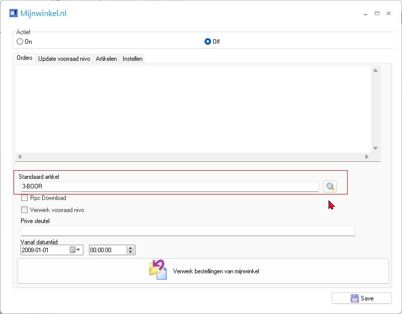
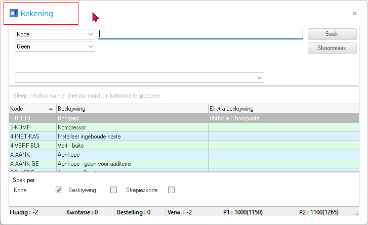

Translations - Plugin - Mijnwinkel / Myshop
Mijnwinkel.nl plugin
Mijnwinkel.nl Plugin is included in osFinancials5 installations but Myshop.com not included in osFinancials in the Plugin → External links - menu. Myshop.com plugin is documented in the osFinancials shop
Menu: Plugins → External links → Mijnwinkel (Setup ribbon).

Standaard artikel lookup ewfers to account should probably refer to stock item

Myshop.com
 Myshop.com Plugin not available in English or Translatable version in osFinancials installation.
Myshop.com Plugin not available in English or Translatable version in osFinancials installation.
Documentation on Webshop in English for Myshop.com
https://www.osfinancials.org/en/webshop/e-commerce/myshop.com-plugin
Myshop.com plugin (osf-boekhoudpakket-administratie.nl)
This plugin can do this:
Selected products from osF can be exported into a csv file, which can be read by myshop.com.
The upload to Myshop.com can also be automated with this plugin.
Product image can be uploaded to a FTP server of your choose.
As an extra service we can host a FTP location for you.
You can import the orders based on products uploaded by osF, customer information and order status.
After importing sales into osF, you need to uplaod the productlist for updating the stock quantity in Myshop.com
If you got an existing Myshop.com webshop, you can select the productlist import for osF as an option.
We'll generate the Myshop products in osF for you, after that, you can sync the sales.
Last development:
Automatic stock update after a sale in Myshop.com.
Automatic stock update after a sale in osF (fysical shop/POS)
Importing sales direct as an invoice
Further whishes send in by users.
Plug-ins don´t need to be downloaded they are allready present in osF.
You will receive an unlocking code per email within one day after receiving payment.
WIth a push on the button you´ll activate the bought plugin."